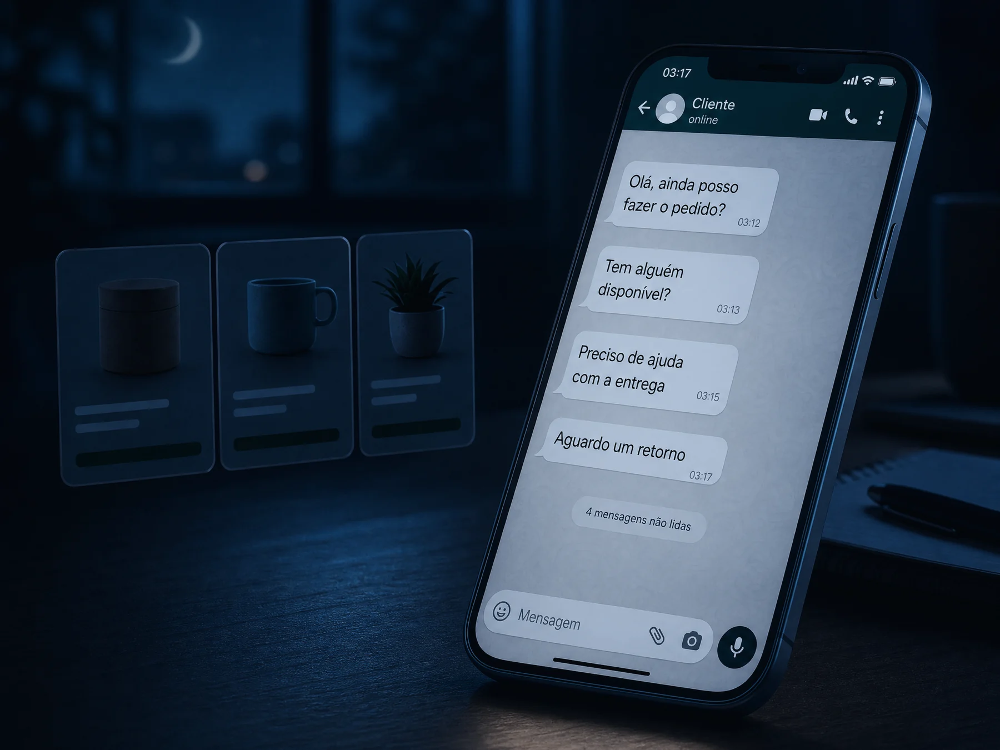
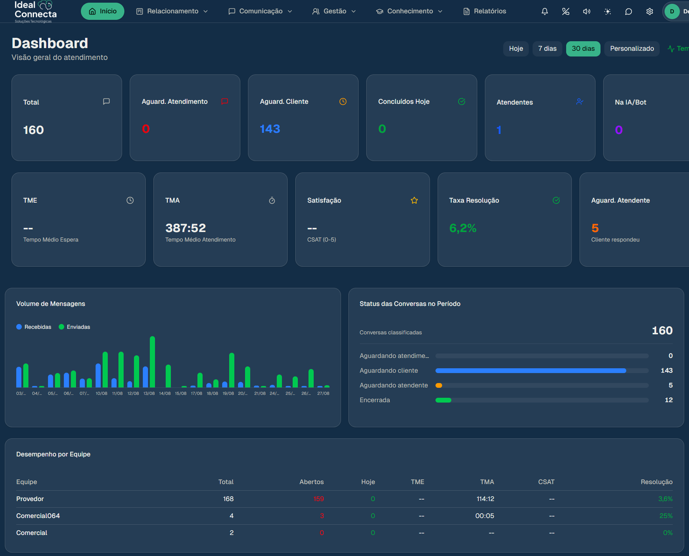
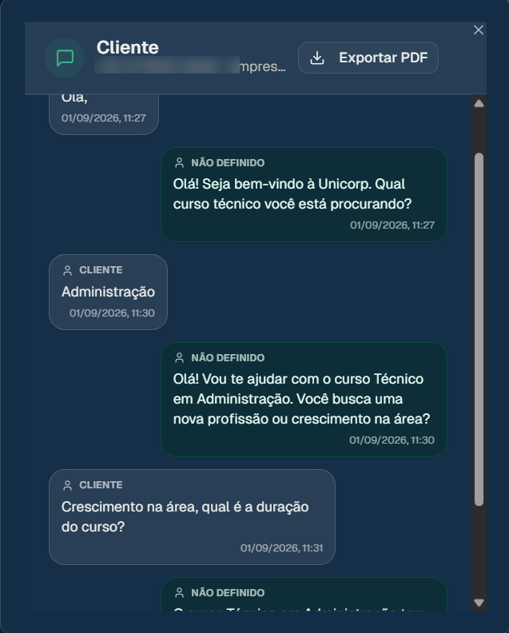
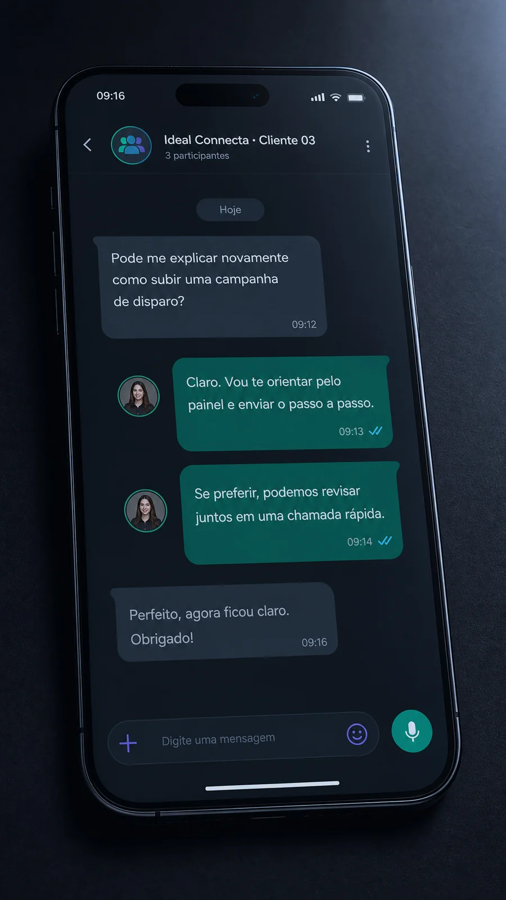

Alguém responde. Mesmo às duas da manhã.
A IA atende o cliente no momento em que ele chama, entende o que ele quer, responde o que dá pra responder e passa pro seu time quando precisa de gente. Sem cliente esperando o horário comercial.

Você não sabe. E é exatamente esse o problema. A Ideal Conecta organiza o atendimento da sua empresa no WhatsApp, com IA que responde na hora e histórico de tudo que foi conversado.
Falar com a gente no WhatsAppSem taxa de implantação. Sem formulário. É só chamar.

"Meu time tá perdendo muito atendimento."
A mensagem chegou, se perdeu no meio das outras, e três dias depois ele já comprou de outro.
"Não consigo ver nada que meu time faz."
Quem respondeu, quem demorou, o que ficou parado. Sem isso não dá pra cobrar nem pra ajudar.
"O cliente disse que a gente combinou."
Você sabe que não foi assim. E não tem como mostrar o que realmente foi conversado.
"Mandei o orçamento e ele não respondeu."
Ninguém lembrou de voltar naquela conversa. Não é preguiça, é volume.
A IA atende o cliente no momento em que ele chama, entende o que ele quer, responde o que dá pra responder e passa pro seu time quando precisa de gente. Sem cliente esperando o horário comercial.
Quantos atendimentos entraram, quantos estão esperando, quanto tempo cada um levou, como está cada equipe. Em tempo real, numa tela só.

Toda conversa fica registrada, com data, horário e quem atendeu. Você busca pelo nome do cliente e vê tudo que já foi falado — inclusive o que foi dito antes de você entrar na conversa.

Não é chamado. Não é ticket. Não é vídeo gravado te ensinando a se virar. É um grupo com o responsável pela sua operação, e a gente conversa ali durante o dia.

"Atendimento de extrema qualidade, plataforma intuitiva e de fácil gestão! Ajudando tanto o gestor quanto os atendentes."
"Ótima plataforma, super fácil de usar!! Pessoal muito gentil, oferecem um suporte sem igual, indico!"
"Tive uma experiência extremamente positiva com a Ideal Conecta, marcada pela excelência no atendimento e qualidade nos serviços prestados."
Na prática, a maioria começa a usar em poucos dias. A gente configura junto com você e quem marca a data da virada é você — sua operação não espera a nossa agenda.
Como as áreas usam o WhatsApp hoje, quem atende o quê, o que não pode parar.
Não é a gente fazendo sozinho e devolvendo pronto, nem você se virando com um manual. É feito a quatro mãos — e sem precisar de alguém de TI.
Todo mundo aprende a usar antes de a operação virar. E a gente fica por perto nos primeiros dias.
Sem taxa de setup. Sem projeto de dois meses. Sem parar a operação.
Se alguma dessas frases descreve o que acontece na sua empresa hoje, vale uma conversa de vinte minutos.
Falar com a gente no WhatsApp